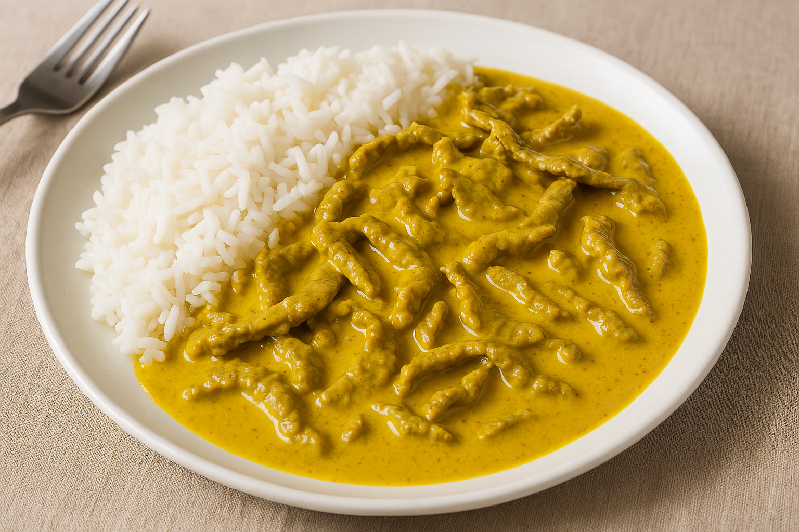

Home
Thin beef curry

Description
Swedish-style curry beef slices served with rice
Ingredients
- 800g thinly sliced beef
- 1 onion
- 2 tbsp curry powder
- 5 cloves garlic, crushed
- 200 ml Norrmejerier whipping cream
- approx. 100 ml water
- 2 bouillon cube
- 1 tsp salt
- 1 pinch ground black pepper
- 4 tbsp butter
- 3 tbsp soy sauce
- 2 tsp sambal oelek
Steps
- Cut the meat into slices, same with onion (Async start cooking rice)
- Fry the meat for a bit then add onion slices
- Put everything else in
- Let it boil until ur happy
- Serve with rice